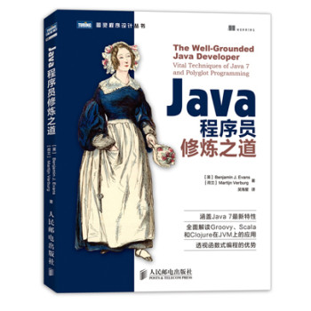
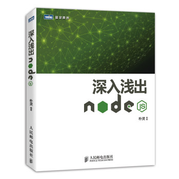
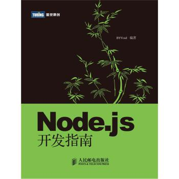
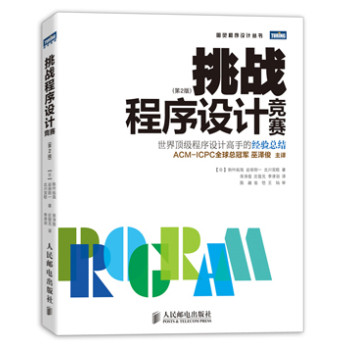
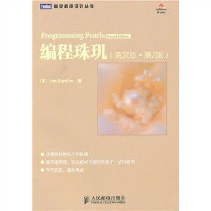

C
C Traps and Pitfalls
The C language is like a carving knife: simple, sharp, and extremely useful in skilled hands. Like any sharp tool, C can injure people who don't know how to handle it.This paper shows some of the ways C can injure the unwary, and how to avoid injury.
Douban Rating: 8.9

Expert C Programming
For software engineers and computer programmers who are writing, developing, testing, debugging software on either IBM PCs or Unix systems. Written for experienced C programmers who want to quickly pick up some of the insights and techniques of experts and master the fine arts of ANSI C, this volume passes on the wisdom of a highly experienced C compiler writer and his colleagues to help programmers reach new heights, and avoid common software pitfalls along the way. Using an original approach and a humorous style that makes deep knowledge both easy and accessible, it gathers into one place, tips, hints, shortcuts, guidelines, ideas, idioms, heuristics, tools, anecdotes, C folklore, and techniques that are often penciled in margins and on backs of papers by those working in the programming trenches-working on many different kinds of projects, over many, many years.
Douban Rating: 9.2

Pointers on C
Provides background information needed to understand C. Covers pointers thoroughly, including syntax, techniques for their effective use, and common programming idioms in which they appear. Compares different methods for implementing common abstract data structures.
Douban Rating: 9.1

C++
C++ Primer
C++ Primer, Fifth Edition, introduces the C++ standard library from the outset, drawing on its common functions and facilities to help you write useful programs without first having to master every language detail. The book’s many examples have been revised to use the new language features and demonstrate how to make the best use of them. This book is a proven tutorial for those new to C++, an authoritative discussion of core C++ concepts and techniques, and a valuable resource for experienced programmers, especially those eager to see C++11 enhancements illuminated.
Douban Rating: 9.1

Java
Java程序员修炼之道
本书分为四部分，第一部分全面介绍Java 7 的新特性，第二部分探讨Java 关键编程知识和技术，第三部分讨论JVM 上的新语言和多语言编程，第四部分将平台和多语言编程知识付诸实践。从介绍Java 7 的新特性入手，本书涵盖了Java 开发中最重要的技术，比如依赖注入、测试驱动的开发和持续集成，探索了JVM 上的非Java 语言，并详细讲解了多语言项目， 特别是涉及Groovy、Scala 和Clojure 语言的项目。此外，书中含有大量代码示例，帮助读者从实践中理解Java 语言和平台。 本书适合Java 开发人员以及对Java7 和JVM 新语言感兴趣的各领域人士阅读。
Douban Rating : 7.4

Core Java
Core Java by Cay S. Horstmann and Gary Cornell was originally published in the Java series of Sun Microsystems Press and is now published by Prentice-Hall. The book is aimed at experienced programmers who want to learn how to write useful Java applications and applets. No hype, no toy code, no language lawyering, just solid facts and in-depth research to help you write real programs.
Douban Rating: 9.0

Python
Beginning Python
Beginning Python: From Novice to Professional is the most comprehensive book on the Python ever written. Based on Practical Python, this newly revised book is both an introduction and practical reference for a swath of Python-related programming topics, including addressing language internals, database integration, network programming, and web services. Advanced topics, such as extending Python and packaging/distributing Python applications, are also covered. Ten different projects illustrate the concepts introduced in the book. You will learn how to create a P2P file-sharing application and a web-based bulletin board, and how to remotely edit web-based documents and create games. Author Magnus Lie Hetland is an authority on Python and previously authored Practical Python. He also authored the popular online guide, Instant Python Hacking, on which both books are based.
Douban Rating: 8.0

JavaScript
深入浅出Node.js
本书从不同的视角介绍了 Node 内在的特点和结构。由首章Node 介绍为索引，涉及Node 的各个方面，主要内容包含模块机制的揭示、异步I/O 实现原理的展现、异步编程的探讨、内存控制的介绍、二进制数据Buffer 的细节、Node 中的网络编程基础、Node 中的Web 开发、进程间的消息传递、Node 测试以及通过Node 构建产品需要的注意事项。最后的附录介绍了Node 的安装、调试、编码规范和NPM 仓库等事宜。 本书适合想深入了解 Node 的人员阅读。
Douban Rating : 8.8

Node.js开发指南
Node.js是一种方兴未艾的新技术，诞生于2009年。经过两年的快速变化，Node.js生态圈已经逐渐走向稳定。Node.js采用了以往类似语言和框架中非常罕见的技术，总结为关键词就是：非阻塞式控制流、异步I/O、单线程消息循环。不少开发者在入门时总要经历一个痛苦的思维转变过程，给学习带来巨大的障碍。 而本书的目的就是帮助读者扫清这些障碍，学会使用Node.js进行Web后端开发，同时掌握事件驱动的异步式编程风格，以便进一步利用Node.js的高级特性。
Douban Rating : 7.6

Professional Javascript for Web Developers
This book is aimed at three groups of readers: Experienced object-oriented programming developers looking to learn JavaScript as it relates to traditional OO languages such as Java and C++; Web application developers attempting to enhance site usability; novice JavaScript developers. Nicholas C. Zakas worked with the Web for over a decade. He has worked on corporate intranet applications used by some of the largest companies in the world and large-scale consumer websites such as MyYahoo! and the Yahoo! homepage. He regularly gives talks at companies and conferences regarding front-end best practices and new technology.
Douban Rating: 9.3

Algorithm
Introduction to Algorithms
Some books on algorithms are rigorous but incomplete; others cover masses of material but lack rigor. Introduction to Algorithms uniquely combines rigor and comprehensiveness. The book covers a broad range of algorithms in depth, yet makes their design and analysis accessible to all levels of readers. Each chapter is relatively self-contained and can be used as a unit of study. The algorithms are described in English and in a pseudocode designed to be readable by anyone who has done a little programming. The explanations have been kept elementary without sacrificing depth of coverage or mathematical rigor. The first edition became a widely used text in universities worldwide as well as the standard reference for professionals. The second edition featured new chapters on the role of algorithms, probabilistic analysis and randomized algorithms, and linear programming. The third edition has been revised and updated throughout. It includes two completely new chapters, on van Emde Boas trees and multithreaded algorithms, and substantial additions to the chapter on recurrences (now called "Divide-and-Conquer"). It features improved treatment of dynamic programming and greedy algorithms and a new notion of edge-based flow in the material on flow networks. Many new exercises and problems have been added for this edition. As of the third edition, this textbook is published exclusively by the MIT Press.
Douban Rating : 9.4

数学之美
几年前，“数学之美”系列文章原刊载于谷歌黑板报，获得上百万次点击，得到读者高度评价。读者说，读了“数学之美”，才发现大学时学的数学知识，比如马尔可夫链、矩阵计算，甚至余弦函数原来都如此亲切，并且栩栩如生，才发现自然语言和信息处理这么有趣。 今年，作者吴军博士几乎把所有文章都重写了一遍，为的是把高深的数学原理讲得更加通俗易懂，让非专业读者也能领略数学的魅力。读者通过具体的例子学到的是思考问题的方式 —— 如何化繁为简，如何用数学去解决工程问题，如何跳出固有思维不断去思考创新。
Douban Rating : 8.7
挑战程序设计竞赛（第2版）
世界顶级程序设计高手的经验总结 【ACM-ICPC全球总冠军】巫泽俊主译 日本ACM-ICPC参赛者人手一册 本书对程序设计竞赛中的基础算法和经典问题进行了汇总，分为准备篇、初级篇、中级篇与高级篇4章。作者结合自己丰富的参赛经验，对严格筛选的110 多道各类试题进行了由浅入深、由易及难的细致讲解，并介绍了许多实用技巧。每章后附有习题，供读者练习，巩固所学。 本书适合程序设计人员、程序设计竞赛爱好者以及高校计算机专业师生阅读。
Douban Rating : 8.8

算法竞赛入门经典
《算法竞赛入门经典》是一本算法竞赛的入门教材，把C/C++语言、算法和解题有机地结合在了一起，淡化理论，注重学习方法和实践技巧。全书内容分为11章，包括程序设计入门、循环结构程序设计、数组和字符串、函数和递归、基础题目选解、数据结构基础、暴力求解法、高效算法设计、动态规划初步、数学概念与方法、图论模型与算法，覆盖了算法竞赛入门所需的主要知识点，并附有大量习题。书中的代码规范、简洁、易懂，不仅能帮助读者理解算法原理，还能教会读者很多实用的编程技巧。另外，书中包含的各种开发、测试和调试技巧也是在传统的语言、算法类书籍中难以见到的。 《算法竞赛入门经典》可作为全国青少年信息学奥林匹克联赛（NOIP）的复赛教材及ACM国际大学。
Douban Rating : 8.6
Coding
编程珠玑
本书是计算机科学方面的经典名著。书的内容围绕程序设计人员面对的一系列实际问题展开。作者Jon Bentley 以其独有的洞察力和创造力，引导读者理解这些问题并学会解决方法，而这些正是程序员实际编程生涯中至关重要的。本书的特色是通过一些精心设计的有趣而又颇具指导意义的程序，对实用程序设计技巧及基本设计原则进行了透彻而睿智的描述，为复杂的编程问题提供了清晰而完备的解决思路。本书对各个层次的程序员都具有很高的阅读价值。. 多年以来，当程序员们推选出最心爱的计算机图书时，《编程珠玑》总是位列前列。正如自然界里珍珠出自细沙对牡蛎的磨砺，计算机科学大师Jon Bentley以其独有的洞察力和创造力，从磨砺程序员的实际问题中凝结出一篇篇不朽的编程“珠玑”，成为世界计算机界名刊《ACM通讯》历史上最受欢迎的专栏，最终结集为两部不朽的计算机科学经典名著，影响和激励着一代又一代程序员和计算机科学工作者。本书为第一卷，主要讨论计算机科学中最本质的问题：如何正确选择和高效地实现算法。.. 在书中，作者选取许多具有典型意义的复杂编程和算法问题，生动描绘了历史上众大师们在探索解决方案中发生的轶事、走过的弯路和不断精益求精的历程，引导读者像真正的程序员和软件工程师那样富于创新性地思考，并透彻阐述和总结了许多独特而精妙的设计原则、思考和解决问题的方法以及实用程序设计技巧。解决方案的代码均以C/C++语言编写，不仅有趣，而且有很大的实战示范意义。每章后所附习题极具挑战性和启发性，书末给出了简洁的解答。...
Douban Rating : 9.2
